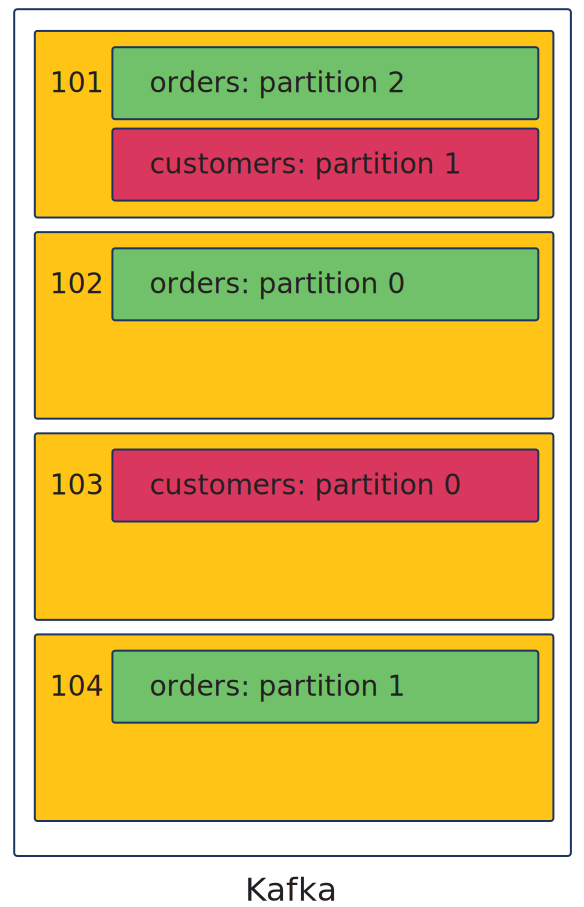
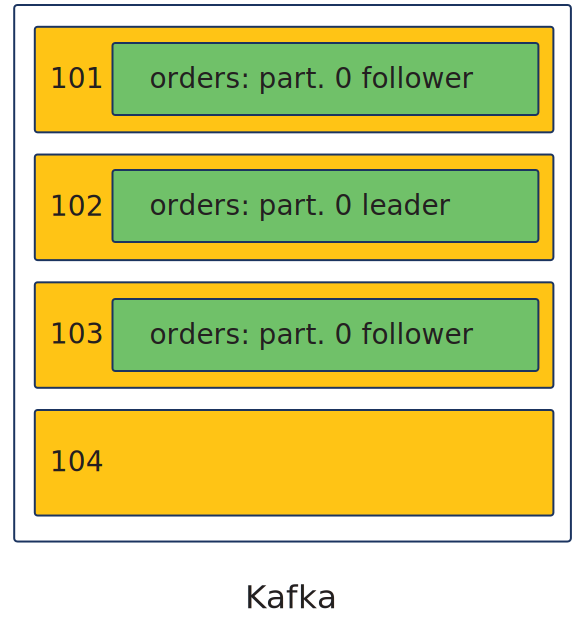
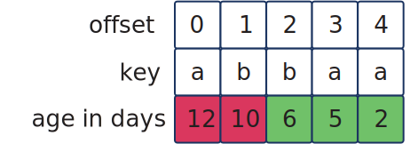
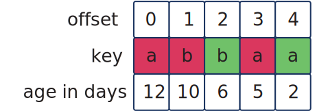
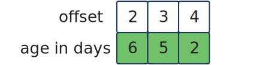

0: Outline & Objectives
Welcome!
Welcome to our Technical Fundamentals of Apache Kafka® Training!
This course is explicitly designed to prepare you to take either of these courses:
-
Confluent Developer Skills for Building Apache Kafka®
-
Apache Kafka® Administration by Confluent
We start very simple and build up some logical concepts about the fundamentals of Kafka, before getting into some of how it works physically.
Agenda
Lessons of Presentation:
-
Getting Started
-
How are Messages Organized?
-
How Do I Scale and Do More Things With My Data?
-
What’s Going On Inside Kafka?
-
Recapping and Going Further
Exercises:
-
Two built-in interactive quizzes
-
Critical Thinking Challenge Exercises
-
Interactive Lab - Console Producing and Consuming
Course Objectives
After participating the lessons and activities in this course, you will be able to:
-
Describe the life cycle of a message
-
Explain the concepts of topics and partitions
-
Describe some properties of producers and consumers
-
Explain two types of offsets
-
Explain groups and their benefits
-
List some responsibilities of brokers
-
Be prepared to take either of these courses:
-
Confluent Developer Skills for Building Apache Kafka®
-
Apache Kafka® Administration by Confluent
-
1: Getting Started
Commentary
Let’s get started with our first lesson of the Technical Fundamentals of Apache Kafka course.
Why Kafka?
In a nutshell…
| Kafka is good for | Kafka is not meant for |
|---|---|
|
|
Commentary
So, why would you want to use Kafka? This course is really about the technical details, but it’s important to take a minute and talk about this.
We live in a world now where most of us want things instantly. Your customers probably demand resuls now, not later. So reacting to data in real-time is really what Kafka is meant for.
We like to say we enable you to work with data in motion. That is, when an event happens in the real-world, it gets recorded in Kafka. You can then do something with that more or less right away - like when ride-share apps match up drivers with riders who request rides. But the data is still current even after that, so you might do other things with it — analysis, offering promotions, etc. — and Kafka lets you do that too.
What Kafka is not meant for is the idea of that old process that runs at 11:00 every night, or once a month. There are plenty of legacy systems out there for that. Kafka is also not meant to be a place for storing data long term either. There are plenty of systems for that too. Kafka really is there to help you work with your data while it is moving.
One Example Use Case: Ordering Food
Suppose we are building a system for a restaurant chain:
-
customers order food via an app - mobile or kiosk
-
staff receive orders to fulfill in real-time
-
management tracks inventory based on orders
We will build up some of the fundamental details of Kafka and use this example.
Commentary
So, I am going to talk about one particular use case and use this one to frame a lot of the ideas as we go.
It used to be that when it was time to order your lunch at a restaurant, that was all a manual process: you told someone what you wanted, they told the kitchen, someone made it, etc. More and more, computers are getting involved, and, especially these days, we’re doing a lot of ordering via apps.
So, imagine you’re building a system to support ordering food via an app — or maybe a kiosk at the front of the restaurant you see when you walk in. You place an order there. It enters the system. Something happens and an order slip is printed out for the folks in the back to make your food or put your order together. Not long after that, your order is ready to go!
Beyond you getting your order promptly, there might be other interest in the data. The manager of the restaurant probably wants to know what is being used up and needs to be reordered later. Some other process can be looking at the orders, for example, mid-afternoon, and saying that during the lunch rush, we used up a lot of fries and probably need more before dinner time. Another process can be looking for things like this and automate having another shipment of fries arrive to location 372 before dinner so that you’re never "out" of anything. All of this can be happening automatically with your data once it’s in Kafka and you’ve programmed the correct processes.
Messages
The atomic unit of Kafka is a message or record or event
Commentary
So, let’s learn some of the language you need to know.
The most basic thing to know about is a message. This is the smallest "chunk" of data you have have in Kafka. It might be a single person’s order — or a single customer or menu item. You’ll hear messages also called records or events. Whichever of these terms you hear or use, they’re really all the same thing.
For the idea of real-time processing, the idea of an event really makes sense. Focusing on one of those examples, my lunch order is really an event. And, as we really want to push the idea of data in motion, we’re most often using the term "event" these days.
And, simply put, an event contains two things: a key and a value. The value is the data of the event. The key is technically not needed, but it is really important for a lot of things with how messages get stored, so we’re going to work from the start with the good practice of always associating keys with every message.
Topics
Messages are organized in logical groups called topics.
Example topics:
-
orders
-
menu items
-
customers
-
restaurants
Commentary
Okay, so the next thing is how we group our messages. Every message is part of a logical group called a topic.
In our example, all of the messages that are people’s orders live in one topic — we’ll call it orders. They all represent the same kind of information.
We could have topics for other things we know about - such as individual menu items, customers, or restaurants.
We’re going to focus on that orders topic and how a message gets associated with it, as well as how it gets used…
Three Basic Components
Let’s start simple - with an orders topic in place in Kafka, a producer, and a consumer:
Commentary
So, here we see a picture with a Kafka cluster where our data will live. In it, that green box represents the orders topic we just talked about. All of our orders will live there, or, more accurately, move through there.
There are two other important components to start with - a producer and a consumer…
Life Cycle of a Message: Producing
A producer prepares messages and publishes them to Kafka.
Commentary
So let’s see how a message travels though all of these components. We’re going to start here with a series of simple illustrations we’ll refine as we go.
Here on the left, the purple box represents a producer. A producer is an application that will prepare our messages, so that little orange box will represent a message our producer is getting ready. Let’s say it contains your lunch order.
The producer will say that the message is going to orders topic, and then send it off to Kafka. Or, to use different words, we might say the producer will publish the message with your lunch order to the orders topic.
Life Cycle of a Message: Kafka
Produced messages live in Kafka, organized by topic.
Commentary
Here we switch over to Kafka. Our producer said our message was to go to the orders topic, and indeed, here you see that message living within the orders topic in Kafka. It’s there, waiting for someone to do something with it…
Life Cycle of a Message: Consumption
Consumers subscribe to topics in Kafka and poll for new messages.
Commentary
…and that "someone" will be a consumer. The blue box on the right represents a consumer. It will get the message with your lunch order and decide what to do with it. (Hopefully, it’ll do something like print out your order for the kitchen so that you can get your food soon.)
To be a little more specific, not every consumer gets every message. Consumers must say what topics they’re interested in. We call this subscribing to topics, so this blue consumer has to be subscribed to the orders topic for this to happen.
You might have heard of the idea of a "pub-sub architecture" - or "publish/subscribe." Now that you’ve seen that producers publish messages and consumers subscribe to topics to get messages, hopefully you can see that Kafka fits this.
So… that’s the basic story of messages, topics, producers, and consumers — and that’s this first lesson! Check out the next lesson to find out some more important details about how messages are organized in Kafka.
2: How are Messages Organized?
Commentary
From the first lesson of our Technical Fundamentals of Apache Kafka course, you know the basics of messages, topics, producers, and consumers.
Specifically, you know we have topics, but it’s important for you to learn a bit more about how messages are organized within topics. So let’s get into that…
Topics and Partitions
Topics are broken down into partitions
Simplest case: Topic with one partition
Commentary
We know topics are groups of messages, but we have the ability to break down topics into partitions.
In fact, every topic must have one partition, so let’s refine our earlier picture to show our orders topic to have one partition, the simplest situation that is possible.
You’ll notice that this partition is labeled partition 0 - as we computer-science-minded folks like to do; indeed, we’ll always start counting from 0. And, you’ll notice that our orange message lives within this partition.
So then, we could more accurately say that every message lives not only within a topic, but within a partition of a topic. And while we can say that partitions form logical subsets of topics, we can say they are physical groupings as well. (We’ll get into that physical aspect later, in Lesson 4.)
Offsets — in Kafka
-
Each message in a partition has an offset
-
Starting from 0
Commentary
We also need to know where each message is within a partition, so we have these things called offsets to keep track of that.
We put the first message at offset 0 in a partition. We put the second message at offset 1. And so forth.
In this picture, you see that we have a total of 6 messages stored, at offsets 0 through 5. The partition’s machinery knows that the next message will go to offset 6. And, in general, when a new message arrives to a given partition, it will be automatically written at that next offset.
Offsets — Consumer Offsets
-
Consumers track where they will read next via a consumer offset
| In this picture, the consumer has last read the message at offset 3. |
Commentary
So, every message has an offset within a partition and this helps organize how the messages are stored. But how do the consumers know where they are reading? They have to keep track of their positions too.
So they do - via something called consumer offsets. Say our consumer knows to read the message at offset 3 in partition 0 of orders. It will do exactly that, and when it’s done, it will advance its consumer offset to 4. Next time our consumer goes to read, it will read the message at offset 4. In the picture, you see the consumer offset at this point, after the consumer has read the message at offset 3 and is ready to read the message at offset 4.
We could say that consumer offsets are like bookmarks. Say you’re reading a book, have finished page 15, and it’s time to take a break. You’ll probably want to know where you left off next time you pick up the book, so you might grab a bookmark, flip the page, and put your bookmark at page 16. The consumer offset is simply a consumer putting a bookmark in the partition it is reading.
Check Your Knowledge!
Commentary
This concludes the content on message organization. Before going on, you are encouraged to take a break and take a quick quiz to check what you’ve learned so far — via the link above.
The quiz is powered by Google Forms, it’s quick, and it’s anonymous. You’ll instantly get feedback when you click the submit button.
3: How Do I Scale and Do More Things With My Data?
Commentary
Welcome to the third lesson of our Technical Fundamentals of Apache Kafka course. From the first two lessons, you should know what producers and consumers do, as well as the ideas of topics, partitions, offsets, and consumer offsets. Let’s take it further…
Scaling Up…
So far, we have seen…
-
one partition
-
one consumer
In practice…
-
multiple consumers in a consumer group
-
multiple consumer groups
-
multiple partitions in a topic
Commentary
So far, in what we’ve seen, we’ve had one consumer and one partition. But in practice, you’ll want more. We’re going to learn about how and why here.
We can have multiple consumers in what we call consumer groups, and we’ll generally have multiple of those. As for the partitions themselves, we’ll almost always have multiple of them for a topic. Let’s get into it!
Consumer Groups
Consumers exist in consumer groups
Consumers in a group:
-
same application
-
different data
Commentary
So, we generally will put our consumers into what we call consumer groups. This allows us to deploy more consumers to get more power than just with a single consumer.
The first thing to know is that all the consumers in a consumer group are doing the same thing. That is, they are the same application. So, let’s change our earlier picture, and instead of having just one consumer processing orders, let’s have 3, and let’s put them in a group. You can see this above now.
What distinguishes the consumers in a group is that they are using different data. Put differently, they’re working as a team to process data. How is this possible? We’ll get into exactly how, but first…
Multiple Consumption
Could have multiple groups using the same data…
Commentary
…we need to talk about having multiple consumer groups and why you’d want that.
You might recall in our earlier picture with a consumer reading a message, that message was still showing in the orders topic when the consumer read it. Indeed, this is true; when a consumer reads a message, it just advances its offset and leaves the message there. This allows things like having another consumer consume that message — to do something different with it.
If all the consumers in a group are doing the same thing, to do something different with a message that’s practical, we’d need a different consumer group. In our last picture, we had 3 consumers in a group processing orders.
Now, we’ll add on a second group — the two orange consumers are tracking inventory. They need to see the same orders that the other group did, but for a different reason — perhaps some ingredients got used a lot at lunch time and these consumers can trigger a process that ships more before dinner time. I like this idea! No one likes it when you get told, "sorry, we’re out of this, this, and this on the menu"!
Multiple Partitions
In practice, we want topics to have multiple partitions.
Commentary
Now, let’s bring the idea of multiple partitions into play. Instead of having just one partition for our orders topic, let’s change the picture to have 3.
They’re numbered 0 to 2, consistent with our earlier idea of counting from 0.
So what does this enable? Well…
Consuming from Multiple Partitions
Now our consumers can consume in parallel:
-
Consumers subscribed to a topic are assigned partitions
-
Group covers all partitions
-
Each consumer has an offset for each partition
![Cluster shown with 3 partitions of orders topic: partition 0 has messages at offsets 0 through 5, partition 1 has messages at offsets 0 through 2, and partition 2 has messages at offsets 0 through 3. Each partition has a dotted box showing the offset where the next message would be written. Order processing consumer group shown with 3 consumers with arrows to partitions and specifically to consumer offsets: consumer 0 has consumer offset 5 in partition 0, consumer 1 has consumer offset 1 in partition 1, and consumer 2 has consumer offset of 4 in partition 2.](images/fun-revamp-images-ex-copy/fig3-4.svg)
Commentary
Now that we have 3 partitions, we can really see consumption happening in parallel. We said before that consumers subscribe to topics. More specifically, Kafka will assign each consumer a partition — or partitions — of the subscribed topics. Kafka will also take care of making sure that every partition gets assigned to one of the consumers in the group. This is important — nobody’s order gets missed.
In essence, our consumers in the group are working together as a team to consume all the orders. And, in our picture with the order processing group there were three consumers. Conveniently, we have three partitions too, so each consumer is processing one partition. It’s sort of like a virtualization of if every partition were a line at the front of a restaurant and each consumer were one of the folks working a register taking orders.
Each consumer needs to know who’s next in line, and does that with a consumer offset. Notice in the picture that there’s an arrow from every consumer to a specific offset in an assigned partition. The arrow points to that consumer’s offset in that partition. So consumer 0 has presumably processed the orders at offsets 0 through 4 in partition 0 and is ready to take process the order at offset 5. And consumer 1 has taken one customer’s order in partition 1. Partition 2 is effectively the line you want to get in when you go into the restaurant. The assigned consumer, consumer 2, has processed all the orders and has its consumer offset set at 5, ready to process the next order that arrives.
Expanding the Last Picture
Commentary
For completeness, let’s add some more into that picture. You’ll see the same picture as before, but this time the inventory consumer group is showing too.
A difference is that there are just 2 consumers in this group. But every order — in all three partitions — has to get counted in inventory. With two consumers and three partitions, that means that one of those consumers is going to have to be processing two partitions.
Notice also that there are offsets from each consumer to each assigned partition. Consumer 3 is processing two partitions, but it’s at offset 2 in partition 0 and offset 1 in partition 1.
Also, if we look at partition 2, we see the two different consumers are at different places. That’s pretty likely, and this is probably the natural situation you’d expect. Consumer 2, processing orders, is a couple orders ahead of consumer 4, who is tallying those orders for inventory. But nothing says it has to be this way. The consumers in the different groups are totally independent. So you see — intentionally — an example of this with partition 0, where the inventory-tracking consumer is an order ahead of the order-processing consumer.
How Do Messages Get Partitioned?
-
Producers decide which messages go to which partition
-
Partitions are indexed from
0tonumberOfPartitions - 1 -
Default partitioner:
partitionIndex = hash(key) % numberOfPartitions
Commentary
You may be wondering just how the messages get to the partitions.
Remember, it is the producers who send the messages, and it is actually the producer’s job to decide the partition. There are different ways this can happen, but in almost all cases, the producer is running a process called a partitioner to make this decision. And, here, we’ll just talk about the default partitioner.
Remember, we count from 0 in indexing partitions, so if you had five partitions, they would be indexed 0 to 4. The first thing the default partitioner does is run the key through a hash function. This more or less mixes up the inputs (and makes them numeric if needed), but, as it is a function, running the same key through the hash function will always give the same output. But, we also have to have a result smaller than the number of partitions, so dividing by that number and keeping the remainder achieves that. You’ll see this shown with the modulus operator above.
Scaling is Easy!
Say you want to
-
Increase the number of consumers in a group during a busy season
-
Decrease the number of consumers in a group when things are slow
-
Increase the number of partitions for a topic
When you do, Kafka automatically redistributes the assignments of consumers to partitions!
| More on how all of this works in both our Developer and Administrator training! |
Commentary
One last thing to talk about here. Essentially, you can change some things about your deployment.
If you want more consumers, you can choose to increase how many consumers are running in a group. And you can decrease that number too. For our restaurant application, this might be like having more cashiers running registers at dinner time, but having fewer working when things are calmer.
What’s nice about this is that Kafka is watching for changes in how many consumers are in groups, and if it detects a change, it will automatically reassign consumers to partitions.
This is great for helping you get parallelism, but if you have four partitions, you can’t have more than four consumers processing them at once. However, you can also increase the number of parititons, and if you did, this also would cause Kafka to automatically move around the assignments of consumers to partitions. We call this rebalancing.
And, it’s pretty big deal and there’s a lot to understand to really get all the details, but that’s all you need to know for now! We go much, much deeper into this concept in both of our Developer and Administration courses - from different perspectives.
With that, we’re done with our logical view of how partitions and consumers work. In the next lesson, we get into some of the physical matters.
4: What’s Going On Inside Kafka?
Commentary
This is the fourth lesson in our Technical Fundamentals of Apache Kafka course. If you’ve checked out the other lessons, you now know some things about messages, topics, and producers, and hopefully have a good idea how consumers and partitions work logically.
Going Deeper…
Now let’s learn about some more details about a Kafka cluster, especially physical things… .Commentary
Details
Let’s continue exploring, but now let’s go deeper into Kafka from more of a physical perspective in this lesson.
Brokers
A Kafka cluster consists of multiple brokers
Commentary
I want to start by telling you about one more important concept — that of a broker.
We need at least one broker to use Kafka, and in practice, we have mutiple brokers to form a Kafka cluster.
Our data will be written to the brokers and read from the brokers. And, you could think of them as physical machines — but they could also be virtual or in the cloud somewhere. As far as we’re concerned in this course, that’s all the same.
So, let’s start with a picture of a Kafka cluster with four brokers. Each broker has a broker ID, so that’s what the numbers 101 through 104 in the picture you see are.
Partitions & Brokers
Partitions are really physical groupings of the messages in topics.
Partitions are stored on brokers.
Commentary
But we said earlier every message has to be part of a topic, and specifically part of a partition. So, the messages don’t directly live on the brokers. The brokers contain partitions — more specifically, partitons of topics.
Let’s keep our running example going. Our orders topic had three partitions. So here they are again, represented in green boxes on various brokers. Partition 0 is on Broker 102, Partition 1 is on Broker 104, and Partition 2 is on Broker 101.
Partitions & Brokers (2)
The number of partitions is a topic setting. Kafka decides how partitions get distributed across brokers. |

|
Commentary
And, certainly, a broker can have more than one partition on it. So, here we take the previous picture and show two partitions of a different topic, the customers topic. It looks like Broker 101 has one partition of each different topic, and each of the others has one partition.
How many partitions are there? That’s something you decide at the topic level — probably when you create it, but remember you can increase it later. Either way, it is Kafka that will decide which partition goes to which broker. You can trust that it’s doing this in an intelligent way — but administrators among you will want to step in and monitor what’s going on and sometimes intervene.
What if a Broker Goes Down?
|

|
Commentary
Okay, great, data lives on partitions and partitions live on brokers.
No matter how they’re deployed, brokers ultimately live on hardware that may fail or become unreachable. But customers want real-time responses and you want your data to be available. If my lunch order lands on the partition on Broker 102 and something’s wrong with Broker 102, I still want my lunch and I still want it at lunch time.
So what can we do about this? Well, the answer is replication, and I want to tell you a little bit about that here.
We can turn on replication, and when we do, we sort of have backup copies of every partition — or better said, multiple instances of each partition. One instance, the main one, we call the leader, and all writes go to the leader. Furthermore, the consumers also read from the leader.
There are additionally replicas called followers, and they keep up with the leader in the background. In our picture, you now see just one partition, with its leader on Broker 102 - and two followers - one on 101 and one on 103. If something were to cause Broker 102 to be unavailable, our leader replica is unavailable, but Kafka can detect this and promote one of those followers - from 101 or 103 - to become the leader. And this is good, because it keeps our data highly available. I still get my lunch that landed on the parition on 102 in a reasonable amount of time (and if it’s all managed right, I probably have no idea anything ever went wrong.)
That’s the big picture story of replication and we’ll leave it at that for here. If you want to learn more of the details, we go into lots of depth in the Developer and Administration classes — of course, tailored to each of those roles.
Serialization and Deserialization
-
Kafka stores messages as byte arrays
-
Producers must serialize messages
-
Consumers must deserialize messages
Commentary
Okay, cool, so we know about brokers and replication now. There are a few other things you should know about before we wrap up here.
The first is about the format of data. There are lots of ways we can express data to send to Kafka, but in all cases, data is stored in Kafka as byte arrays. We need a process called a serializer to do the conversion. There are some lab exercises that are available to you with this course, and you’ll just be working with text. But behind the scenes, string serializers are being used.
You can specify serializers independently for keys and values — and this is something you would do in configuring a producer. On the flip side, serialization must be undone, so consumers will need something called deserializers for that.
Immutable Messages
-
Messages are immutable
-
Once written, we cannot change anything about them
Commentary
Next — another important detail you should know in getting started with Kafka is that of immutability. Kafka messages are immutable. What does this mean? Literally taking the word apart, it means unchangeable. Or, once a message is written, you can’t change anything about it.
That’s really all there is to say for now, but keep this important fact about Kafka logs in your mind as you learn about Kafka.
…But We Don’t Keep Messages Forever…
Control which messages stay in Kafka via a retention policy:
| Policy | Deletion | Compaction |
|---|---|---|
Idea |
Remove messages older than a certain age (default 7 days) |
Keep only the latest value for each key |
Before |

|

|
After |

|
| Partitions are divided into segments, which affect both retention policies. |
Commentary
All right - one last important thing. Yes, you cannot change a message, but that doesn’t mean messages stay in Kafka forever. Back to that idea that we use Kafka to process data in motion. So, there must be some way of controlling how long messages stay in Kafka. And there is. We call that a retention policy.
Commentary: Deletion (left column)
The simplest retention policy is to delete messages based solely on their age. This the most common use of the deletion retention policy, and it’s set up by default to delete messages older than 7 days.
Let’s look at a little example of that. On the left, in the center, you see a log with some information about 5 messages — their offsets, their keys, and their ages. It is only their ages that matter, and messages older than 7 days get deleted in the default setup. Those messages at offsets 0 and 1 qualify, so their ages are colored red. And you can see that after deletion is done, they’re gone. Notice also that the messages that stay — those whose ages are colored green — retain their offsets.
In our restaurant order processing example, getting the orders processed is the most important thing, but keeping them around longer enables things like inventory or analysis. If 7 days doesn’t suit you, you can tune that threshold.
Commentary: Compaction (right column)
On the right, there’s a little taste of the other major retention policy: compaction. This one only cares about keys. It applies in use cases where keeping older values of a key doesn’t make sense. This works nicely for things like tracking the state of an online shopping order.
You’ll see the same log as in the deletion example, except this time we care about keys and only keep the latest message per key. There’s an appearance of key a at offset 0, but the later appearance of key a at offset 3 renders the message at offset 0 old information. So, it’s red and will go away. But, there’s an even newer appearance of key a at offset 4, making even the offset 3 message old and it will also go away.
Looking at key b, we see its latest appearance at offset 2, and this makes the one at offset 1 be deemed old and it will be compacted away. We’re left with only the messages at offsets 2 and 4 — only one appearance per key.
There’s a lot more to say about these policies, but this is the basic idea and if you understand this, you’re well on your way to learning Kafka. One of those details is that partitions are further divided into something called segments, and they have an impact on the implementation. But this is enough for now!
Check Your Knowledge!
Commentary
With that, it’s time again to take a break and I invite you to review what you’ve learned in this lesson and the previous with a quick quiz. This one’s a little more involved than the last.
[Cmd+3] Here’s what it looks like.
As before … If you’re viewing this On Demand via our website, you’ll find the link to the quiz next in your learning path. If you’re viewing this via YouTube, you’ll find the link to the quiz down below in the description.
And either way, the quiz is powered by Google Forms, it’s quick, and it’s anonymous. You’ll instantly get feedback when you click the submit button.
Once you’ve done that, come back for the final lesson. I’ll recap what we’ve talked about and we’ll look at the life cycle of a message again, now that we know more details. And I’ll give you a taste of some other things you can do with Kafka and related Confluent products, and leave you with some additional exercises to go deeper with what you’ve learned and experience some it firsthand.
Cmd+1
5: Recapping
Commentary
In this short section, we’re going to recap what we’ve learned about.
Life Cycle of a Message: Producing
![Like in Lesson 2, Kafka cluster in the center as a box, but like in Lesson 4, cluster shows brokers inside with IDs 101, 102, 103, and 104. As in Lesson 4, orders topic partitions are shown: partition 2 on broker 101, partition 0 on broker 102, and partition 1 on broker 104. Box for producer to the left with a box representing a message inside the producer, with a dotted arrow from the message pointing to Kafka. Order processing consumer group shown in a box to the right; it contains boxes for consumer 0, consumer 1, and consumer 2.](images/fun-revamp-images-ex-copy/fig5-1.svg)
-
Producers serialize and partition messages
-
Producers send messages
-
…in batches - can be configured for throughput and latency desires
-
Commentary
Let’s begin by recapping the life cycle of a message. Over the next three slides, you’ll see pictures similar to what you saw in the first lesson. But now, we’ll see those illustrations enhanced with many details you’ve learned about since then.
The picture you see now shows the ideas of a producer, Kafka, and consumers like we started with. But now the picture also shows brokers and partitions — and we have a consumer group instead of a singe consumer.
Here, we’re focusing on the producer side. SRemember that producers first prepare messages, and when they do, they associate a topic with each message. We are again using the idea that a message — that little orange box in the picture — will correspond to a food order, and it will be part of the orders topic.
The producer runs the message through a serliazer to convert it to bytes and then runs it through a partitioner to decide what specific partition of the orders topic will get this message. And then — omitting some details — it can send it off. One of those details is that the producer can be tuned to send more than one message at once, allowing you to optimize for the kind of throughput and latency you want.
Life Cycle of a Message: Kafka
Produced messages live in Kafka, organized by topic.
-
Kafka consists of brokers
-
Brokers contain partitions, which contain messages
-
Brokers handle retention and replication
Commentary
Now let’s switch over to Kafka. Remember that our Kafka cluster consists of brokers. Those brokers contain partitions of all the known topics. So here again, we see three partitions of the orders topic spread out on different brokers of our Kafka cluster.
It looks like the partitioner had decided our message went to partition 1 of the orders topic, so you can see it now on that partition, living on broker 104.
Remember, also, that we can control how messages are retained in Kafka and we can configure our topics to be replicated to allow for high availabiity. Both of these are matters the brokers take care of managing.
Life Cycle of a Message: Consumption
Consumers subscribe to topics in Kafka and poll for new messages.
-
Consumers operate in groups
-
Consumers subscribe to topics, are assigned partitions of those topics
-
Consumers poll for messages in partitions at consumer offsets
-
…and fetch in batches - can be configured for throughput and latency desires
-
Commentary
Now let’s look at the consumption end of the picture.
So, remember that consumers have the job of reading messages. And they generally operate in groups to distribute the workload of reading. A consumer must subscribe to topics it is interested in — that’s the "sub" of "pub-sub." And, all the consumers in a group get assigned partitions of the subscribed topics.
In our picture, we have a group of consumers processing orders, and we see the partition assignments via the arrows. We’ll focus on consumer 2, subscribed to orders and assigned to partition 1. Like all consumers, it must poll for new messages, and when it does, since partition 1 has our orange message, it’ll be able to fetch it — and then go on to whatever it does to process it.
That’s all there is to it for now, but note that, like on the producer end, we can tune our consumers to ask for more than one message at a time and tune them too.
6: Going Further (Optional)
Note: Optional Section
If you are completing this training as a prerequisite to one of our instructor-led training courses, you may treat this section as optional.
A Step Beyond Fundamentals: Other Components
We’ve addressed some aspects of Core Kafka in this course. Some other topics you may want to learn about include:
-
Kafka Connect - a tool that helps you copy data to Kafka from other systems and vice-versa
-
Kafka Streams - a layer on top of the Producer and Consumer APIs that allows for stream processing
-
Confluent ksqlDB - a tool for stream processing using a more-accessible SQL-like syntax, among other things
-
Confluent Schema Registry - a tool for managing schemas, guiding schema evolution, and enforcing data integrity
You can learn more about these topics in our Confluent Developer Skills for Building Apache Kafka® and Apache Kafka® Administration by Confluent courses.
Commentary
Before we wrap up, let’s get a taste of some of the other things you can do. Everything we’ve talked about in this course is part of core Kafka, but this list also includes some Confluent-specific additions.
You know that you can produce data to Kafka and consume data from Kafka, but what if you want to get that data from some other system or send it to some other system? You can do that. We could say Kafka plays well with others, and Kafka Connect is the tool that enables that. We talk about how it works and how to configure it in both our Developer course and our Administration course.
Additionally, while producers and consumers are great, you may be interested in stream processing to transform or enrich your data — or do some interesting time-based processing with your data. There are some tools that integrate with Kafka to let you do that.
Kafka Streams, part of core Kafka, is one of them, and ksqlDB, a Confluent product, is another. Among other things, ksqlDB lets you do stream processing with a more accessible, SQL style of language.
Finally, your data is likely to need more than just standard data types, and you may be interested in managing schemas. We have the Confluent Schema Registry to help with that, and we get into lots of details of how it works — and how to work with schemas in general — in our Developer training.
What Does Confluent Platform Add to Kafka?

Commentary
As noted on the last slide, everything we discussed in the previous lessons is part of core Apache Kafka, and Confluent Platform adds some additional functionality to the mix.
Here we have a picture that visualizes some of that. The black box at the bottom represents Apache Kafka — and, as per the last slide, that includes the Connect API and Kafka Streams.
The lighter blue, perhaps turquoise, is the free level of what you get with Confluent Platform. This is where ksqlDB and the Schema Registry come in, and it has some other things — like the REST proxy, which allows you to produce to and consume from Kafka from pretty much any language, as long as you can make an HTTP call.
Finally, the darker blue boxes represent the paid Confluent Platform features. This includes some tools like Confluent Control Center, which is a web-based GUI that allows you to do many management and monitoring tasks. Also, it includes many tools for managing a cluster — such as Auto Data Balancer, which you can use to keep some brokers from carrying significantly-heavier loads than others.
Confluent Cloud
|
Commentary
Last thing to tell you about — we offer Confluent Cloud.
While you can deploy Apache Kafka or Confluent Platform and manage it on your own, the idea is that Confluent Cloud exists to take a lot of that management burden off of you. A lot of administrative tasks — sizing, upgrades, and more — are handled by Cloud.
It is available backed by any of the three major public cloud providers — and you can try it for free on our website. And, in fact, there’s an exercise tailored to this course that allows you to do just that.
Your Next Steps
-
Complete interactive lab on seeing console producers and consumers in action.
→ Short Confluent Cloud version
→ Gitpod version: More involved version using Gitpod -
Work though other Critical Thinking Challenge Exercises.
→ On the web
→ Solutions on the web too! -
Enroll in and complete one of these courses, as suits your role:
-
Apache Kafka® Administration by Confluent
-
Confluent Developer Skills for Building Apache Kafka®
-
Commentary
So, what should you do next? I’ll leave you with some ideas!
As I just noted on the last slide, there is a short lab exercise that lets you explore Confluent Cloud and see producing and consuming in action. There’s a separate exercise that doesn’t use Cloud — but we’ve configured a tool called Gitpod to spin up some containers to play with producing and consuming too. This one goes deeper into some details with consumer groups and offsets. It’s also free, but you do have to have a GitHub account to do it — but you can sign up for one of those for free too if you don’t have it already.
Additionally, while the two quick quizzes are a fun interactive way of engaging with this material, there’s only so far you can go with multiple choice.
Finally, there are some Critical Thinking Challenge Exercises to think about the content more deeply. These were really meant to inspire discussions, so if you want to get the most out of them, you are encouraged to grab a colleague or friend or two and talk them through. Whether you do that or think them through on your own, there are solutions available too that say some things I would make sure would come up if we were discussing these in a live class.
Finally, of course, if you want to learn more, please join us for one of our instructor-led training courses. You’re now ready to jump into the Administration course or the Developer course — and you’ll be even more ready to make the most of either if you’ve checked out some of the exercises first.